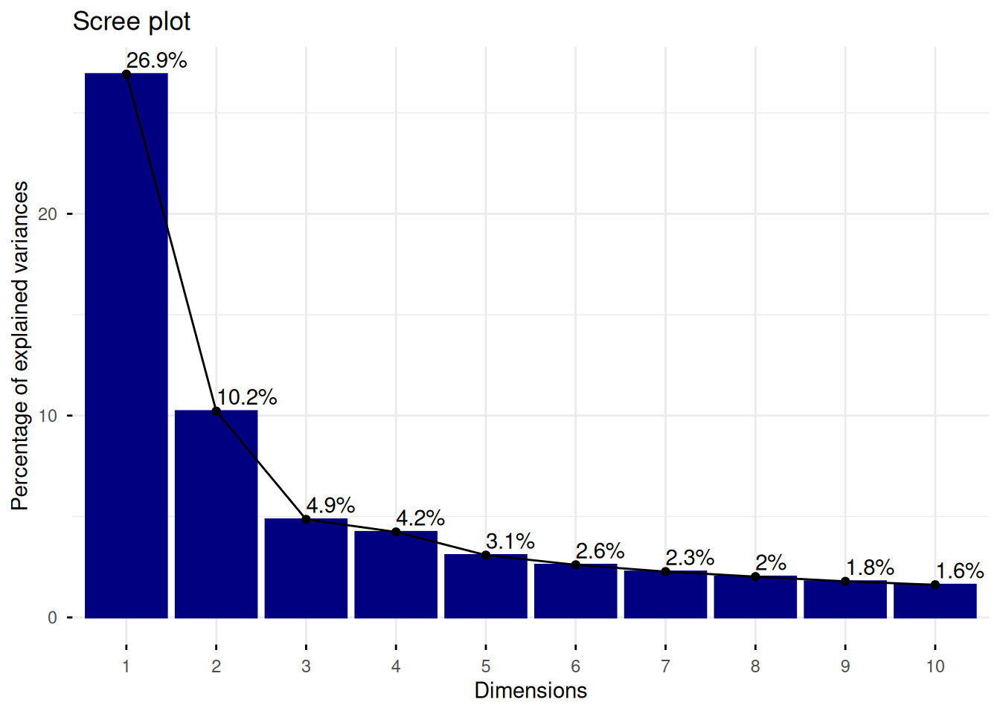
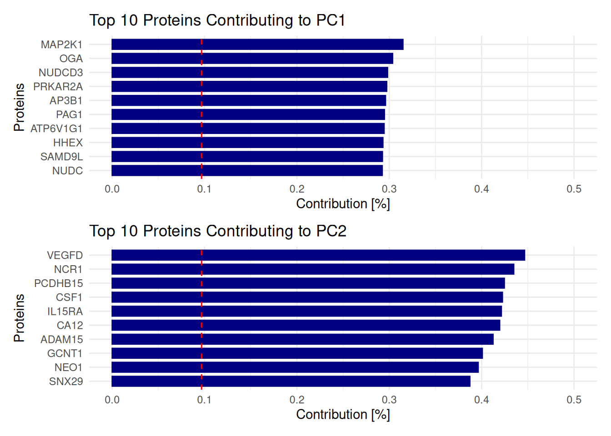
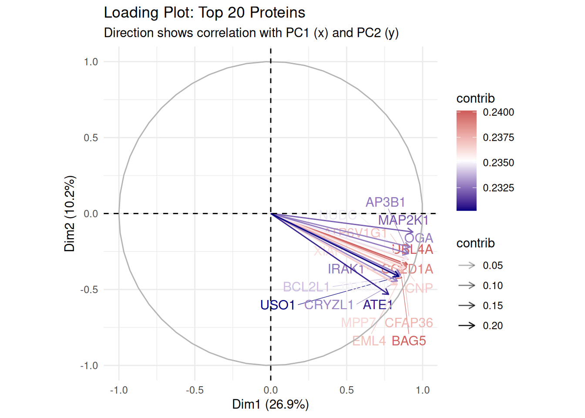
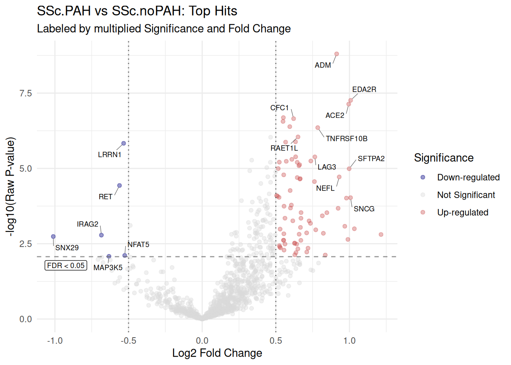
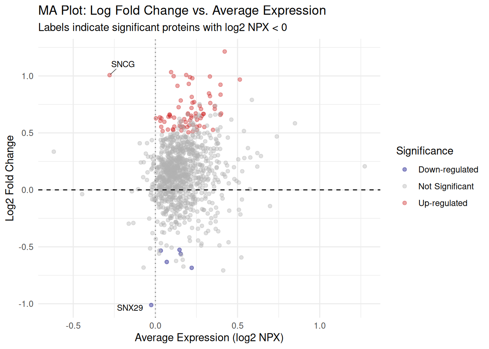
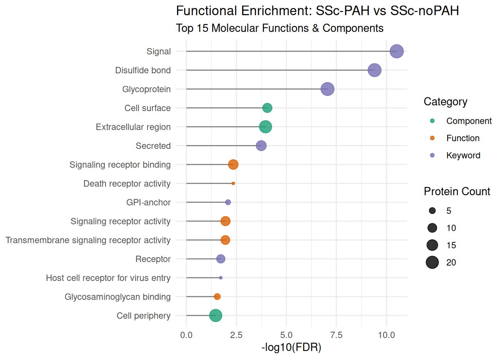
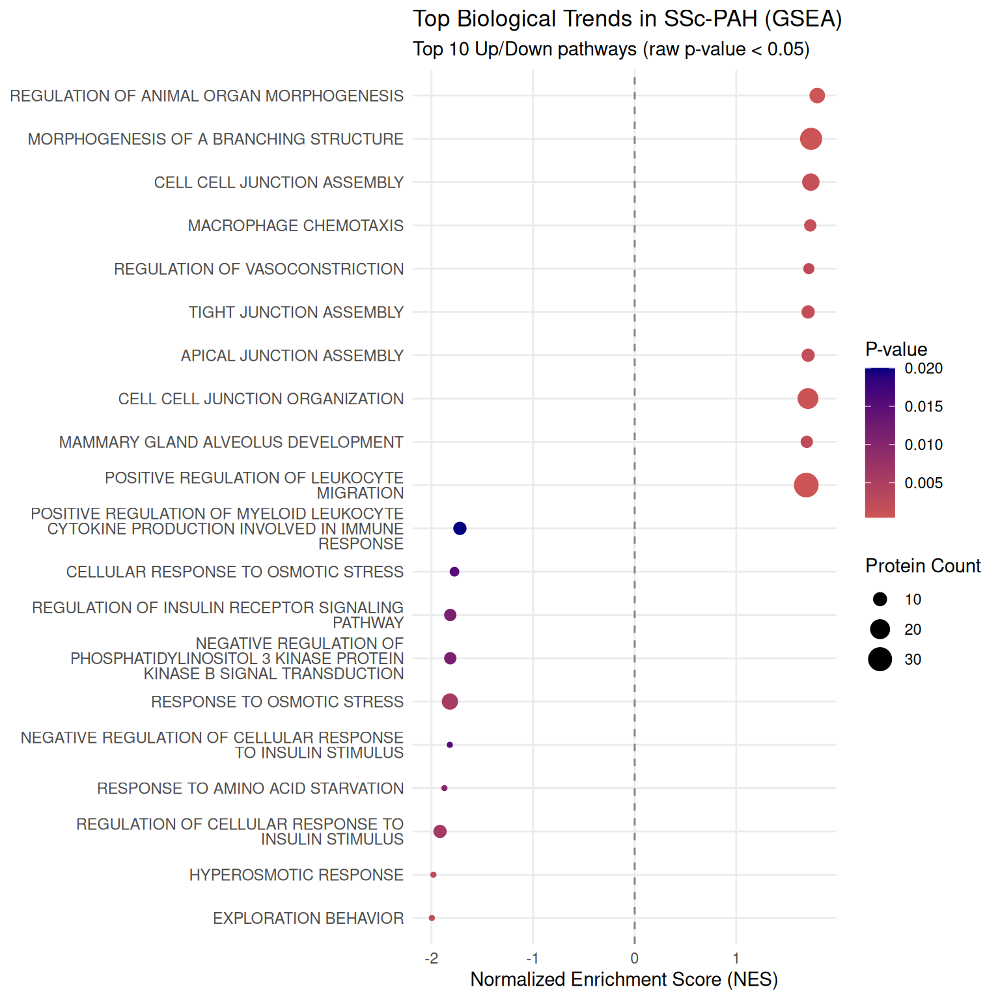
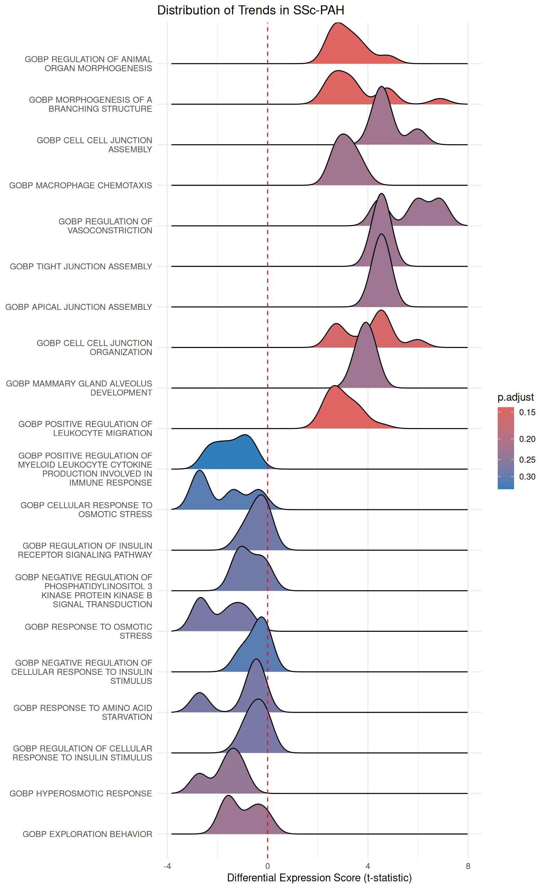

Last updated: 2026-02-22
Checks: 7 0
Knit directory: omics-training/
This reproducible R Markdown analysis was created with workflowr (version 1.7.2). The Checks tab describes the reproducibility checks that were applied when the results were created. The Past versions tab lists the development history.
Great! Since the R Markdown file has been committed to the Git repository, you know the exact version of the code that produced these results.
Great job! The global environment was empty. Objects defined in the global environment can affect the analysis in your R Markdown file in unknown ways. For reproduciblity it’s best to always run the code in an empty environment.
The command set.seed(20260210) was run prior to running
the code in the R Markdown file. Setting a seed ensures that any results
that rely on randomness, e.g. subsampling or permutations, are
reproducible.
Great job! Recording the operating system, R version, and package versions is critical for reproducibility.
Nice! There were no cached chunks for this analysis, so you can be confident that you successfully produced the results during this run.
Great job! Using relative paths to the files within your workflowr project makes it easier to run your code on other machines.
Great! You are using Git for version control. Tracking code development and connecting the code version to the results is critical for reproducibility.
The results in this page were generated with repository version 4a2c638. See the Past versions tab to see a history of the changes made to the R Markdown and HTML files.
Note that you need to be careful to ensure that all relevant files for
the analysis have been committed to Git prior to generating the results
(you can use wflow_publish or
wflow_git_commit). workflowr only checks the R Markdown
file, but you know if there are other scripts or data files that it
depends on. Below is the status of the Git repository when the results
were generated:
Ignored files:
Ignored: .Rhistory
Ignored: .Rproj.user/
Ignored: output/Olink-GB/
Untracked files:
Untracked: code/Olink-GB/
Unstaged changes:
Modified: .gitignore
Modified: analysis/_site.yml
Deleted: analysis/first-analysis.Rmd
Note that any generated files, e.g. HTML, png, CSS, etc., are not included in this status report because it is ok for generated content to have uncommitted changes.
These are the previous versions of the repository in which changes were
made to the R Markdown (analysis/Olink-GB.Rmd) and HTML
(docs/Olink-GB.html) files. If you’ve configured a remote
Git repository (see ?wflow_git_remote), click on the
hyperlinks in the table below to view the files as they were in that
past version.
| File | Version | Author | Date | Message |
|---|---|---|---|---|
| Rmd | 4a2c638 | alexander-gysin | 2026-02-22 | wflow_publish("analysis/Olink-GB.Rmd") |
| html | 9d5e017 | alexander-gysin | 2026-02-22 | Build site. |
| Rmd | 664f17c | alexander-gysin | 2026-02-22 | wflow_publish("analysis/Olink-GB.Rmd") |
| html | cb62f2a | alexander-gysin | 2026-02-22 | Build site. |
| Rmd | 69b5ab2 | alexander-gysin | 2026-02-22 | wflow_publish("analysis/Olink-GB.Rmd") |
| html | c37d3e1 | alexander-gysin | 2026-02-20 | Build site. |
| Rmd | e95c6b9 | alexander-gysin | 2026-02-20 | wflow_publish("analysis/Olink-GB.Rmd") |
| html | 942320d | alexander-gysin | 2026-02-20 | Build site. |
| Rmd | 75a9e0c | alexander-gysin | 2026-02-20 | wflow_publish("analysis/Olink-GB.Rmd") |
| html | 1e15a4c | alexander-gysin | 2026-02-19 | Build site. |
| Rmd | 10e9eb5 | alexander-gysin | 2026-02-19 | wflow_publish("analysis/Olink-GB.Rmd") |
| html | 558ae77 | alexander-gysin | 2026-02-18 | Build site. |
| Rmd | 0eada49 | alexander-gysin | 2026-02-18 | wflow_publish("analysis/Olink-GB.Rmd") |
| html | cbd4b89 | alexander-gysin | 2026-02-18 | Build site. |
| Rmd | f9cf585 | alexander-gysin | 2026-02-18 | wflow_publish("analysis/Olink-GB.Rmd") |
| html | f89194a | alexander-gysin | 2026-02-18 | Build site. |
| Rmd | f29a5c6 | alexander-gysin | 2026-02-18 | wflow_publish("analysis/Olink-GB.Rmd") |
| html | 5f2d281 | alexander-gysin | 2026-02-18 | Build site. |
| Rmd | 54609d1 | alexander-gysin | 2026-02-18 | wflow_publish("analysis/Olink-GB.Rmd") |
| html | 9ba78e7 | alexander-gysin | 2026-02-18 | Build site. |
| Rmd | 48ac657 | alexander-gysin | 2026-02-18 | wflow_publish("analysis/Olink-GB.Rmd") |
| html | cb4c6c9 | alexander-gysin | 2026-02-17 | Build site. |
| Rmd | 632763f | alexander-gysin | 2026-02-17 | Hide all except certain code |
| html | a45865e | alexander-gysin | 2026-02-17 | Build site. |
| html | 7ac5b70 | alexander-gysin | 2026-02-17 | Build site. |
| Rmd | 8fd6e5e | alexander-gysin | 2026-02-17 | wflow_publish("analysis/Olink-GB.Rmd") |
| html | 8635b5c | alexander-gysin | 2026-02-17 | Build site. |
| Rmd | a5e6997 | alexander-gysin | 2026-02-17 | wflow_publish("analysis/Olink-GB.Rmd") |
| html | 8fc46d7 | alexander-gysin | 2026-02-17 | Build site. |
| Rmd | c583496 | alexander-gysin | 2026-02-17 | wflow_publish("analysis/Olink-GB.Rmd") |
| html | a00cade | alexander-gysin | 2026-02-17 | Build site. |
| Rmd | 608c793 | alexander-gysin | 2026-02-17 | wflow_publish("analysis/Olink-GB.Rmd") |
| html | 7b8d3a5 | alexander-gysin | 2026-02-17 | Build site. |
| Rmd | f2390c0 | alexander-gysin | 2026-02-17 | wflow_publish("analysis/Olink-GB.Rmd") |
Introduction
This serves as training to analyze Olink data
Setup
Directories
# Get current file name to make folder
current_file <- "Olink-GB"
#Output paths
output_dir_data <- here::here("output", current_file)
if (!dir.exists(output_dir_data)) dir.create(output_dir_data)
if (!dir.exists(here::here("docs", "figure"))) dir.create(here::here("docs", "figure"))knitr configuration
knitr::opts_chunk$set(
warning = FALSE,
message = FALSE
)Packages
# Utility Packages
library(tidyverse) # Contains dplyr (data manipulation), readr, tibble (modern df), ggplot2 and more
library(here) # Uses the project root for file paths; stops "File not found" errors on other PCs
library(magrittr) # Provides the pipe operator (%>%) to make your code readable
library(RColorBrewer) # Provides professional, color-blind friendly palettes for your plots
library(readxl) # Used to load excel files
# Differential Expression & PCA Packages
library(limma) # The gold standard for linear modeling and DEA (works for Olink/Proteomics)
library(stats) # Built-in R package; provides prcomp() for PCA (no need to load explicitly)
library(FactoMineR) # Multi Factor Analysis for multi-omics, calculates the contribution to the PCA
library(factoextra) # PCA Visualization
# Protein Protein interaction
library(rbioapi) # Allows to access the STRING database via API
# Gene Set Enrichment Analysis
library(msigdbr) #Allows to download GeneSets
library(clusterProfiler) #Performs the GSEA provides Statistical correlation, visualization and some flexibility (can handle GO and KEGG)
library(enrichplot)
library(ggridges)
# Visualization Packages
library(EnhancedVolcano) # Specifically designed for high-quality, easy volcano plots
library(pheatmap) # Quick and clean heatmaps to visualize clusters after PCA
library(patchwork) # Essential for combining multiple plots (e.g., PCA next to a Volcano plot)
library(kableExtra) #better display of tables in the knitted documentggplot global theme
# Set the default ggplot theme globally
theme_set(
theme_bw(base_size = 12) +
theme(
panel.grid.minor = element_blank(),
plot.title = element_text(face = "bold", size = 14),
strip.background = element_rect(fill = "grey95")
)
)Data preparation & QC
Initialization
Read data
Olink_data <- read.csv(here::here("data", "quant.csv"), sep = ";")
Clinical_data <- read_excel(here::here("data", "Metadata_Olink_PL.xlsx"))Define color palette
my_palette <- colorRampPalette(c("navy", "whitesmoke", "firebrick3"))(100)Data clean-up
Formating the Olink file
Protein names to rownames in the Olink file
Olink_data <- Olink_data %>%
column_to_rownames("SampleID") # Replace "ProteinID" with your actual column nameOrder Olink data according to metadata
Olink_data <- Olink_data[, Clinical_data$Barcode]
# Check if column names match metadata barcodes exactly
stopifnot(all(colnames(Olink_data) == Clinical_data$Barcode))Remove the Olink_ID from the rownames
rownames(Olink_data) <- str_remove(rownames(Olink_data), "_.*")Save Processed Data
# These are your core objects for all future analysis
saveRDS(Olink_data, file = file.path(output_dir_data, "Olink_clean.rds"))
saveRDS(Clinical_data, file = file.path(output_dir_data, "Clinical_clean.rds"))Check for missing values in the Olink file
sum(is.na(Olink_data))[1] 0Results
PCA Analysis
PCA Analysis
# Note: PCA functions usually expect samples in ROWS, so we transpose with t()
pca_res <- PCA(t(Olink_data), graph = FALSE)PCA visualization
Plotting Eigenvalues
p_scree <- fviz_eig(pca_res, addlabels = TRUE, barfill = "navy", barcolor = "navy")
p_scree > Key Finding: The first two principal components capture a substantial portion of the total proteomic variance, confirming that the high-dimensional Olink data can be effectively simplified into a 2D space for group comparisons.
- How to interpret this plot: Each bar represents a Principal Component (PC). The height shows the percentage of total variance explained by that component.
- A Scree Plot can show you: How “structured” your data is. If the first few bars are tall, it means a few dominant biological signals are driving the differences between your samples.
- Selection Criteria: This plot includes the variance distribution for all proteins measured in the panel.
Plotting PCA by Group
# 2. PCA Plot colored by Group
p_pca <- fviz_pca_ind(pca_res,
label = "none", # Hide sample names for clarity
habillage = as.factor(Clinical_data$Group),
palette = c("indianred", "navy"),
addEllipses = TRUE,
invisible = "quali") +
theme_minimal() +
labs(title = "Proteomics PCA")
p_pca > Key Finding: The protein profiles of SSc-PAH and
SSc-noPAH patients show a visible shift along the primary axes of
variance; however, the partial overlap of the 95% confidence ellipses
indicates that the groups differ moderately rather than exhibiting
entirely distinct proteomic signatures.
> Key Finding: The protein profiles of SSc-PAH and
SSc-noPAH patients show a visible shift along the primary axes of
variance; however, the partial overlap of the 95% confidence ellipses
indicates that the groups differ moderately rather than exhibiting
entirely distinct proteomic signatures.
- How to interpret this plot: Each point represents a patient sample. The spatial distance between points reflects the similarity of their overall protein profiles. The shaded “ellipses” represent the 95% confidence intervals for each group.
- A PCA Plot can show you: If the clinical groups naturally “cluster” based on protein expression. Overlapping ellipses suggest high biological variability or a spectrum of disease states, while distinct clusters indicate a strong, group-specific protein signature.
- Selection Criteria: This visualization utilizes all proteins in the filtered dataset to calculate coordinates and includes all patient samples.
Visualizing contribution by protein in a simple contribution plot
# manually set a common limit
common_limit <- 0.5
# Visualize the top 10 proteins contributing to PC1
p_top_proteins_PD1 <- fviz_contrib(pca_res, choice = "var", axes = 1, top = 10, fill = "navy", color = "navy", sort.val = "asc") +
theme_minimal() +
labs(title = "Top 10 Proteins Contributing to PC1",
x = "Proteins",
y = "Contribution [%]")+
coord_flip(ylim = c(0, common_limit)) # Flips the plot and sets the scale
# Visualize the top 10 proteins contributing to PC2
p_top_proteins_PD2 <- fviz_contrib(pca_res, choice = "var", axes = 2, top = 10, fill = "navy", color = "navy", sort.val = "asc") +
theme_minimal() +
labs(title = "Top 10 Proteins Contributing to PC2",
x = "Proteins",
y = "Contribution [%]")+
coord_flip(ylim = c(0, common_limit)) # Flips the plot and sets the scale
# / displays the plots in vertical order
p_top_proteins_PD1 / p_top_proteins_PD2
#alternatively flip the plot horizontally to display more bars Key Finding: A specific subset of proteins contributes disproportionately to the variance captured by PC1 and PC2, identifying them as the primary drivers of the differences observed in the PCA map.
- How to interpret this plot: The y-axis shows the percentage of a component’s variance attributed to a single protein. The dashed line represents the “average” expected contribution; any protein crossing this line is a significant driver of that axis.
- A Contribution Plot can show you: Which specific proteins are responsible for the separation of your groups. Proteins in PC1 are likely the strongest differentiators between SSc-PAH and SSc-noPAH.
- Selection Criteria: The top 10 proteins with the highest contribution scores for each axis are displayed.
Visualizing contribution by protein in a loading plot
# Variable Correlation Plot
p_loading <- fviz_pca_var(pca_res,
# Only show the top 20 proteins by 'contribution'
# (This keeps the plot clean)
select.var = list(contrib = 20),
# Color the proteins by their contribution level
col.var = "contrib",
gradient.cols = c("navy", "white", "indianred"),
# Avoid text labels overlapping
repel = TRUE,
# Visual aesthetics
alpha.var = "contrib") +
theme_minimal() +
labs(title = "Loading Plot: Top 20 Proteins",
subtitle = "Direction shows correlation with PC1 (x) and PC2 (y)")
p_loading > Key Finding: The strong correlation between the top 20 proteins (vectors pointing in similar directions) suggests they participate in a shared biological process that characterizes the SSc-PAH phenotype.
- How to interpret this plot: The arrows (vectors) show how proteins correlate with the PCA axes. Arrows pointing in the same direction represent highly correlated proteins. The length of the arrow indicates the strength of the protein’s contribution.
- A Loading Plot can show you: The relationship between individual proteins and the sample groupings.
- Selection Criteria: The top 20 proteins by contribution scores are selected to ensure plot legibility.
!! plot is not very informative and it seems to labelled redundantly (contribution two times)
Differential Expression Analysis
Create the Design Matrix
# 1. Clean the 'Group' column in your metadata directly
# This replaces hyphens/spaces with dots (e.g., SSc-PAH -> SSc.PAH)
Clinical_data$Group_Clean <- make.names(Clinical_data$Group)
# 2. Re-create the group_factor from the clean column
group_factor <- as.factor(Clinical_data$Group_Clean)
# 3. Build the design matrix
design <- model.matrix(~ 0 + group_factor)
# 4. Rename columns to match the clean levels (SSc.PAH, SSc.noPAH)
colnames(design) <- levels(group_factor)Define the comparison
# 5. Define the contrast
# Syntax: makeContrasts(Group1 - Group2, levels = design)
contrast.matrix <- makeContrasts(SSc.PAH - SSc.noPAH, levels = design)Analysis
# Fit the model
fit <- lmFit(Olink_data, design)
fit2 <- contrasts.fit(fit, contrast.matrix)
fit2 <- eBayes(fit2)
# 1. Get the results from limma
de_results <- topTable(fit2, coef = 1, number = Inf, sort.by = "P") %>%
rownames_to_column("Protein")
# 2. CREATE THE MISSING COLUMN (The Fix)
de_results <- de_results %>%
mutate(Significance = case_when(
adj.P.Val < 0.05 & logFC > 0.5 ~ "Up-regulated",
adj.P.Val < 0.05 & logFC < -0.5 ~ "Down-regulated",
TRUE ~ "Not Significant"
))Save DEA Results
# Save the full results table
write.csv(de_results, file = file.path(output_dir_data, "DE_results_SSc_PAH.csv"), row.names = FALSE)
# Also save as RDS to preserve variable types (like the 'Significance' factor)
saveRDS(de_results, file = file.path(output_dir_data, "DE_results_SSc_PAH.rds"))Visualization of the Differential Analysis
Volcanoplot preparation
# --- 1. DATA PREPARATION ---
# Calculate the exact raw p-value that hits the FDR 0.05 threshold
p_cutoff <- de_results %>%
filter(adj.P.Val < 0.05) %>%
pull(P.Value) %>%
max()
# Create a 'Score' to identify the "top corners" (High FC * High Significance)
# This ensures we label the most extreme points in the top-left and top-right.
de_results <- de_results %>%
mutate(label_score = abs(logFC) * -log10(P.Value))
# Identify top 10 Up and top 10 Down based on this combined score
top_up <- de_results %>%
filter(Significance == "Up-regulated") %>%
slice_max(order_by = label_score, n = 10)
top_down <- de_results %>%
filter(Significance == "Down-regulated") %>%
slice_min(order_by = logFC, n = 10) # Using logFC here ensures we stay on the left side
# Re-selecting top_down based on score but ensuring they are actually down-regulated
top_down <- de_results %>%
filter(Significance == "Down-regulated") %>%
slice_max(order_by = label_score, n = 10)
top_labels <- bind_rows(top_up, top_down)Volcano plot
# --- 2. THE FINAL PLOT ---
ggplot(de_results, aes(x = logFC, y = -log10(P.Value), color = Significance)) +
geom_point(alpha = 0.4, size = 1.5) +
scale_color_manual(values = c("Down-regulated" = "navy",
"Not Significant" = "grey85",
"Up-regulated" = "indianred")) +
# Clean, small text labels
geom_text_repel(data = top_labels,
aes(label = Protein),
size = 2.5,
color = "black",
box.padding = 0.5,
point.padding = 0.2,
min.segment.length = 0,
segment.size = 0.2,
segment.color = "grey30",
max.overlaps = Inf) +
theme_minimal() +
labs(title = "SSc.PAH vs SSc.noPAH: Top Hits",
subtitle = "Labeled by multiplied Significance and Fold Change",
x = "Log2 Fold Change",
y = "-log10(Raw P-value)") +
# Guidelines
geom_vline(xintercept = c(-0.5, 0.5), linetype = "dotted", color = "grey40") +
geom_hline(yintercept = -log10(p_cutoff), linetype = "dashed", color = "grey40", alpha = 0.7) +
# Move FDR Label to the far LEFT to avoid crashing with the "Up-regulated" top corner
annotate("label",
x = min(de_results$logFC),
y = -log10(p_cutoff),
label = "FDR < 0.05",
hjust = 0.2, # Align to the left of the x-coordinate
vjust = 1.4,
size = 2.5,
color = "black",
fill = "white", # White background prevents "crashing" with grid lines
label.size = NA, # Removes the box border
fontface = "plain") > Key Finding: Several proteins demonstrate both high statistical significance and substantial fold changes, identifying them as robust candidates for the biological differentiation of SSc-PAH.
- How to interpret this plot: The x-axis represents the magnitude of change (Log2 Fold Change), and the y-axis represents statistical significance (*-log10 P-value). Points in the top-right (red) are upregulated in SSc-PAH, while points in the top-left (blue) are downregulated.
- A Volcano Plot can show you: The most “robust” biological hits at a glance. It helps distinguish between proteins that change drastically in concentration versus those that change consistently across the cohort.
- Selection Criteria: Hits are selected based on a custom label_score (\(|logFC| \times -log10(P)\)) to prioritize proteins in the extreme “corners” of the plot.
Heatmap
# 1. Get the names of the top 30 proteins by significance
top_hits <- de_results %>%
slice_min(order_by = adj.P.Val, n = 20) %>%
pull(Protein)
# 2. Subset your original data
# Assumes Olink_data has proteins as rows and sample IDs as columns
plot_matrix <- Olink_data[top_hits, ]
# 3. Create annotation for the columns (samples)
annotation_col <- data.frame(Status = Clinical_data$Group)
rownames(annotation_col) <- colnames(Olink_data)
# 4. Plot
pheatmap(plot_matrix,
scale = "row", # Normalize by protein to see relative changes
annotation_col = annotation_col,
show_colnames = FALSE,
main = "Top 20 Proteins: SSc-PAH vs SSc-noPAH",
color = my_palette)
Key Finding: Clustering analysis reveals distinct protein expression “blocks” that characterize the SSc-PAH group, highlighting coordinated molecular shifts between the two conditions.
- How to interpret this plot: Rows are proteins and columns are samples. Red indicates higher expression relative to the row average, and blue indicates lower expression. The trees (dendrograms) group similar samples and similar proteins together.
- A Heatmap can show you: Protein “signatures.” It reveals if sub-groups of patients exist within your clinical groups and identifies which proteins move in unison.
- Selection Criteria: The top 20 proteins with the lowest Adjusted P-values (FDR) were selected for visualization.
Boxplot
# --- STEP 0: Selection Logic ---
top_pval <- de_results %>% slice_min(order_by = adj.P.Val, n = 5) %>% pull(Protein)
top_fc <- de_results %>% slice_max(order_by = abs(logFC), n = 5) %>% pull(Protein)
top_score <- de_results %>% slice_max(order_by = label_score, n = 5) %>% pull(Protein)
protein_list <- unique(c(top_pval, top_fc, top_score))
# --- STEP 1: Create plot_data_long from scratch ---
# This ensures the object exists in the local environment
plot_data_long <- Olink_data[protein_list, ] %>%
as.data.frame() %>%
rownames_to_column("Protein") %>%
# Convert to long format (Barcode matches your Clinical_data column)
pivot_longer(-Protein, names_to = "Barcode", values_to = "NPX") %>%
# Merge with clinical metadata
left_join(Clinical_data, by = "Barcode")
# --- STEP 2: Create the multi-line labels ---
plot_labels <- de_results %>%
filter(Protein %in% protein_list) %>%
mutate(Facet_Label = paste0(
Protein,
"\nadj.P: ", formatC(adj.P.Val, format = "e", digits = 2),
"\nlog2FC: ", round(logFC, 2),
"\nScore: ", round(label_score, 2)
)) %>%
select(Protein, Facet_Label)
# --- STEP 3: Add labels to the data ---
plot_data_long <- plot_data_long %>%
left_join(plot_labels, by = "Protein")
# --- STEP 4: Generate the Grid ---
ggplot(plot_data_long, aes(x = Group, y = NPX, fill = Group)) +
geom_boxplot(outlier.shape = NA, alpha = 0.7, color = "black", size = 0.3) +
geom_jitter(width = 0.2, size = 1, alpha = 0.4, color = "grey20") +
facet_wrap(~Facet_Label, scales = "free_y", ncol = 4) +
theme_bw() +
scale_fill_manual(values = c("SSc-PAH" = "firebrick3", "SSc-noPAH" = "dodgerblue3")) +
theme(
legend.position = "none",
strip.text = element_text(size = 8, face = "bold", lineheight = 1.1),
strip.background = element_rect(fill = "grey95"),
axis.text.x = element_text(angle = 45, hjust = 1, size = 9),
panel.grid.minor = element_blank()
) +
labs(
title = "Key Differential Proteins: SSc-PAH vs SSc-noPAH",
subtitle = "Metrics: Adjusted P-value, Log2 Fold Change, and Combined Score",
x = NULL,
y = "Normalized Protein Expression (NPX)"
)
Key Finding: Individual protein distributions confirm that the top-ranked hits provide a consistent separation between SSc-PAH and SSc-noPAH, with minimal influence from extreme outliers.
- How to interpret this plot: These show the exact NPX (Normalized Protein Expression) values for specific proteins. The box represents the interquartile range, and the horizontal line is the median.
- A Boxplot can show you: The “cleanliness” of a discovery. It allows you to see if the group difference is a consistent shift across all patients or driven by only a few individuals.
- Selection Criteria: A combination of the top 5 proteins by P-value, Fold Change, and combined Score was used to provide a balanced overview of the data.
Save top labels
# Save the list of top hits used for labeling and boxplots
saveRDS(protein_list, file = file.path(output_dir_data, "top_hits_DEA_proteins_list.rds"))MA Plot
# Average expression (A) vs Log Fold Change (M)
# Use 'AveExpr' from limma results
# 1. Create a subset for labeling:
# Significant proteins with Average Expression < 0
low_expr_labels <- de_results %>%
filter(AveExpr < 0 & Significance != "Not Significant")
# 2. Plot
ggplot(de_results, aes(x = AveExpr, y = logFC, color = Significance)) +
geom_point(alpha = 0.4, size = 1.5) +
scale_color_manual(values = c("Down-regulated" = "navy",
"Not Significant" = "grey70",
"Up-regulated" = "firebrick3")) +
# Add labels for low expression proteins
geom_text_repel(data = low_expr_labels,
aes(label = Protein),
size = 3,
color = "black",
max.overlaps = 20,
box.padding = 0.5,
segment.size = 0.2) +
geom_hline(yintercept = 0, linetype = "dashed") +
# Add a vertical line at the 0 threshold for clarity
geom_vline(xintercept = 0, linetype = "dotted", color = "grey50") +
theme_minimal() +
labs(title = "MA Plot: Log Fold Change vs. Average Expression",
subtitle = "Labels indicate significant proteins with log2 NPX < 0",
x = "Average Expression (log2 NPX)",
y = "Log2 Fold Change") > Key Finding: The distribution of significant hits across the range of average expression values suggests that the findings are not biased by protein abundance or low-signal technical noise. Data normalization is not perfect.
- How to interpret this plot: The x-axis is the Average Expression (signal intensity), and the y-axis is the Log Fold Change. A balanced “cloud” centered at zero on the y-axis indicates successful data normalization.
- An MA Plot can show you: If your significant hits are concentrated in low-abundance proteins (which may be noisier) or if they are distributed across the entire detection range of the Olink panel.
- Selection Criteria: All proteins are plotted; significant proteins with lower average expression are labeled to monitor potential signal-to-noise issues.
!! Doesn’t make much sense with NPX sine it is relative and not absolute.
Protein Protein Interaction

Key Finding: While some hits form clusters with eachother, many hits are singletons. This suggests that many biological processes are involved and not just one hub.
- How to interpret this plot: Circles (nodes) are proteins, and lines (edges) are known interactions. Thicker lines indicate higher confidence based on experimental evidence and databases.
- A PPI Network can show you: If your hits are biologically related. “Hub” proteins (those with many connections) often represent the most central regulators of the disease process.
- Selection Criteria: The network is generated from the top 30 proteins ranked by Adjusted P-value.
Enrichment Analysis
Fetch STRING Enrichment Results
# 1. We use the same top 30 proteins used for the PPI network
top_proteins_enrich <- de_results %>%
slice_min(order_by = adj.P.Val, n = 30) %>%
pull(Protein) %>%
as.character()
# 2. Call the STRING API to get functional enrichment
# This creates the 'enrichment_results' object that was missing
enrichment_results <- rba_string_enrichment(
ids = top_proteins_enrich,
#background = de_results$Protein, #background defines to what the expression is compared and thus when it is considered enriched or depleted
species = 9606
)# 1. Combine the list of results into a single data frame
# rba_string_enrichment returns a list of tables; bind_rows stacks them
enrichment_all <- enrichment_results %>% bind_rows()
# 2. Filter for specific biological categories
# We use categories confirmed to exist in your data: Function, Component, and Keyword
enrichment_clean <- enrichment_all %>%
filter(category %in% c("Function", "Component", "Keyword")) %>%
arrange(fdr) %>% # Sort by significance (lowest False Discovery Rate first)
# Safely select columns: any_of() prevents errors if column names vary across versions
# It looks for 'count', 'number_of_nodes', or 'number_of_genes'
select(term, description, fdr, category,
any_of(c("count", "number_of_nodes", "number_of_genes"))) %>%
# Rename the 5th column to 'Count' so our plotting code always works
rename(Count = 5)
# 3. Prepare data for plotting
# We take the top 15 most significant pathways and fix mathematical issues
plot_data <- head(enrichment_clean, 15) %>%
mutate(
fdr = as.numeric(fdr),
# If FDR is 0, replace with a tiny number to allow -log10 calculation (which fails at 0)
fdr = ifelse(fdr <= 0, 1e-10, fdr),
# Calculate the negative log10 of the FDR for better visualization (higher = more significant)
neg_log10_fdr = -log10(fdr)
)
# 4. Create the Lollipop Plot
# This is a cleaner alternative to a bar chart for categorical data
ggplot(plot_data,
aes(x = reorder(description, neg_log10_fdr), y = neg_log10_fdr)) +
# Draw the "stick" of the lollipop
geom_segment(aes(xend = reorder(description, neg_log10_fdr), yend = 0),
color = "grey50") +
# Draw the "candy" (point) of the lollipop
# Size of point represents number of proteins; color represents the database source
geom_point(aes(size = Count, color = category), alpha = 0.8) +
# Flip coordinates to make long pathway descriptions easy to read
coord_flip() +
# Use a clean, professional theme for the report
theme_minimal() +
# Apply a distinct color palette for the categories
scale_color_brewer(palette = "Dark2") +
# Add descriptive labels for the report
labs(
title = "Functional Enrichment: SSc-PAH vs SSc-noPAH",
subtitle = "Top 15 Molecular Functions & Components",
x = NULL, # Description is self-explanatory on the Y-axis
y = "-log10(FDR)",
size = "Protein Count",
color = "Category"
) > Key Finding: Significant enrichment in specific molecular functions and cellular components suggests that the proteomic changes in SSc-PAH are concentrated in these biological processes.
- How to interpret this plot: The length of the line (x-axis) indicates the significance (-log10 FDR). The dot size represents the number of proteins involved in that specific term.
- A Lollipop Plot can show you: The “big picture” biology. It groups individual proteins into functional categories, making it easier to see which systems (e.g., “Extracellular Matrix” or “Cytokine Activity”) are most affected.
- Selection Criteria: Displays the top 15 most significant terms across the Function, Component, and Keyword categories from the STRING database.
Table of Top 15 Enrichment Groups and Proteins
Generate a Clean Table of Top 15 Enrichment Groups
# 1. Take the top 15 groups
top_15_groups <- head(enrichment_clean, 15)
# 2. Join with raw data and format the protein list
enrichment_table_clean <- top_15_groups %>%
left_join(
enrichment_all %>% select(description, inputGenes),
by = "description"
) %>%
mutate(
# Remove c(), quotes, and extra spaces
# This turns c("ACE2", "HGF") into "ACE2, HGF"
Proteins = gsub('c\\(|\\)|"|\\s', '', inputGenes),
# Optional: Replace commas with ", " for better line-wrapping in tables
Proteins = gsub(',', ', ', Proteins),
# Format FDR to a clean scientific notation
FDR = formatC(as.numeric(fdr), format = "e", digits = 2)
) %>%
# 3. Select and rename for the final display
select(
Category = category,
Description = description,
Count = Count,
FDR,
`Associated Proteins` = Proteins
)
# 4. Display with kableExtra for a high-quality look
knitr::kable(enrichment_table_clean,
caption = "Table 1: Top 15 Functional Enrichment Terms",
booktabs = TRUE) %>%
kable_styling(bootstrap_options = c("striped", "hover", "condensed"),
full_width = F,
position = "left") %>%
column_spec(5, width = "30em") # This prevents the protein list from making the table too wide| Category | Description | Count | FDR | Associated Proteins |
|---|---|---|---|---|
| Keyword | Signal | 24 | 3.04e-11 | DCN, LAG3, EBI3, HGF, RAMP2, CD302, CFC1, JTB, TNFRSF10B, SNED1, LRRN1, PRELP, GFRA1, RSPO1, RSPO3, EPHA2, RAET1L, SFTPA2, LAYN, TNFRSF19, TAFA5, ACE2, EFNA4, ADM |
| Keyword | Disulfide bond | 23 | 3.90e-10 | DCN, LAG3, HGF, RAMP2, CD302, CFC1, SCARB2, TNFRSF10B, SNED1, LRRN1, TNFSF13, PRELP, GFRA1, RSPO1, RSPO3, EPHA2, RAET1L, LAYN, TNFRSF19, EDA2R, ACE2, EFNA4, ADM |
| Keyword | Glycoprotein | 23 | 8.79e-08 | DCN, LAG3, EBI3, HGF, RAMP2, CD302, CFC1, SCARB2, SNED1, LRRN1, TNFSF13, PRELP, GFRA1, RSPO1, RSPO3, EPHA2, RAET1L, LAYN, TNFRSF19, EDA2R, TAFA5, ACE2, EFNA4 |
| Component | Cell surface | 11 | 8.93e-05 | LAG3, EBI3, RAMP2, CD302, CFC1, TNFRSF10B, GFRA1, EPHA2, RAET1L, LAYN, ACE2 |
| Component | Extracellular region | 20 | 1.10e-04 | DCN, LAG3, EBI3, HGF, SCARB2, SNED1, PRELP, GFRA1, RSPO1, RSPO3, SFTPA2, TAFA5, ACE2, ADM |
| Component | Extracellular region | 20 | 1.10e-04 | DCN, LAG3, EBI3, HGF, CFC1, SCARB2, SNED1, LRRN1, TNFSF13, PRELP, GFRA1, RSPO1, RSPO3, RAET1L, SFTPA2, LGALS7, TAFA5, ACE2, EFNA4, ADM |
| Keyword | Secreted | 13 | 1.80e-04 | DCN, LAG3, EBI3, CFC1, SNED1, TNFSF13, PRELP, RSPO1, RSPO3, TAFA5, ACE2, EFNA4, ADM |
| Function | Death receptor activity | 3 | 4.50e-03 | TNFRSF10B, TNFRSF19, EDA2R |
| Function | Signaling receptor binding | 12 | 4.50e-03 | LAG3, EBI3, HGF, CFC1, SNED1, TNFSF13, GFRA1, RSPO1, RSPO3, TAFA5, EFNA4, ADM |
| Keyword | GPI-anchor | 4 | 8.20e-03 | CFC1, GFRA1, RAET1L, EFNA4 |
| Function | Signaling receptor activity | 11 | 1.10e-02 | LAG3, EBI3, RAMP2, CD302, SCARB2, TNFRSF10B, GFRA1, EPHA2, TNFRSF19, EDA2R, EFNA4 |
| Function | Transmembrane signaling receptor activity | 10 | 1.12e-02 | LAG3, EBI3, RAMP2, SCARB2, TNFRSF10B, GFRA1, EPHA2, TNFRSF19, EDA2R, EFNA4 |
| Keyword | Receptor | 9 | 1.89e-02 | RAMP2, CD302, SCARB2, TNFRSF10B, GFRA1, EPHA2, TNFRSF19, EDA2R, ACE2 |
| Keyword | Host cell receptor for virus entry | 3 | 1.89e-02 | SCARB2, EPHA2, ACE2 |
| Function | Glycosaminoglycan binding | 5 | 2.84e-02 | DCN, PRELP, RSPO1, RSPO3, LAYN |
| Component | Cell periphery | 20 | 3.39e-02 | DCN, LAG3, EBI3, RAMP2, CD302, CFC1, SCARB2, JTB, TNFRSF10B, SNED1, LRRN1, PRELP, GFRA1, EPHA2, RAET1L, PALM2, TNFRSF19, EDA2R, ACE2, EFNA4 |
Gene Set Enrichment Analysis from the DEA
Prepare Ranked List for GSEA
!! Reconsider selection based on t, adjp or fc
# We need a clean, sorted, named vector with no NAs
gsea_input <- de_results %>%
# Remove rows where Protein name or t-statistic is missing
filter(!is.na(Protein), !is.na(t)) %>%
# If there are duplicate protein names, take the one with the highest absolute t-stat
group_by(Protein) %>%
slice_max(order_by = abs(t), n = 1, with_ties = FALSE) %>%
ungroup() %>%
# Sort descending by t-statistic
arrange(desc(t))
# Create the named vector
ranked_vec <- gsea_input$t
names(ranked_vec) <- gsea_input$Protein
# FINAL CHECK: Remove any remaining NAs or non-finite values (like Inf)
ranked_vec <- ranked_vec[is.finite(ranked_vec)]Run GSEA
!! Consider using another subcategory than BP
### 1. Get GO Biological Process Gene Sets
go_genesets <- msigdbr(species = "Homo sapiens", category = "C5", subcategory = "BP") %>%
select(gs_name, gene_symbol)
### 2. Run GSEA with GO-BP
gsea_res <- GSEA(
geneList = ranked_vec,
TERM2GENE = go_genesets,
pvalueCutoff = 1, # See everything first
minGSSize = 5, # Suitable for Olink
maxGSSize = 500,
eps = 0, # Better precision for p-values
nPermSimple = 10000, # More stable permutations
verbose = FALSE
)
# Check the results
gsea_results_df <- as.data.frame(gsea_res)
# print(paste("Number of GO terms found:", nrow(gsea_results_df)))Filter GSEA Results
This filter is too strict. Instead for searching for significant differences lets’s search for trends and label them as such. remplace FDR with uncorrected p-value !! Rather use adjusted p-value < 0.2
# 1. Choose your filter: Trends (p-value) vs. Significant (p.adjust)
gsea_trends <- gsea_results_df %>%
# Filter for trends (raw p-value < 0.05)
filter(pvalue < 0.05) %>%
# --- UNCOMMENT BELOW TO SWITCH BACK TO STRICT SIGNIFICANCE ---
# filter(p.adjust < 0.05) %>%
# --------------------------------------------------------------
# 2. Separate the NES into 'Activated' and 'Suppressed'
mutate(Status = ifelse(NES > 0, "Up-regulated in SSc-PAH", "Down-regulated in SSc-PAH")) %>%
# 3. Clean the GO Term names (Remove GOBP_ and underscores)
mutate(Description = gsub("GOBP_", "", Description),
Description = gsub("_", " ", Description)) %>%
# 4. Order by effect size (NES)
arrange(desc(abs(NES)))
# Check how many trending terms remain
print(paste("Trending GO terms (raw p < 0.05) found:", nrow(gsea_trends)))[1] "Trending GO terms (raw p < 0.05) found: 261"# Save the trending results for your supplement
write.csv(gsea_trends, file = file.path(output_dir_data, "GSEA_GO_BP_trends.csv"), row.names = FALSE)Visualization of GSEA
# 1. Prepare the data with wrapped labels
top_10_trends_wrapped <- gsea_trends %>%
group_by(Status) %>%
slice_max(order_by = abs(NES), n = 10) %>%
ungroup() %>%
mutate(
# Wrap strings at 40 characters
# You can change 40 to 30 if you want them even narrower
Description_Wrapped = str_wrap(Description, width = 40)
)
# 2. Create the plot
ggplot(top_10_trends_wrapped, aes(x = NES, y = reorder(Description_Wrapped, NES))) +
geom_point(aes(size = setSize, color = pvalue)) +
# Standard color scale: red for significant/high-p, blue for low-p (or vice versa)
scale_color_gradient(low = "indianred3", high = "navyblue") +
# Add a vertical line at 0
geom_vline(xintercept = 0, linetype = "dashed", color = "grey50") +
theme_minimal() +
theme(
# Increase line spacing for the wrapped y-axis labels
axis.text.y = element_text(lineheight = 0.8, size = 9),
panel.grid.minor = element_blank()
) +
labs(
title = "Top Biological Trends in SSc-PAH (GSEA)",
subtitle = "Top 10 Up/Down pathways (raw p-value < 0.05)",
x = "Normalized Enrichment Score (NES)",
y = NULL,
size = "Protein Count",
color = "P-value"
) > Key Finding: Several GO Biological Processes show strong enrichment trends, indicating that SSc-PAH involves broad, pathway-level shifts even in cases where individual proteins may not reach strict significance.
- How to interpret this plot: The x-axis is the NES (Normalized Enrichment Score). Color indicates the p-value
- A GSEA Dot Plot can show you: Coordinated trends. It is more powerful than looking at single proteins because it aggregates signal from many related proteins to identify broader biological themes.
- Selection Criteria: Filtered for trends (raw p-value < 0.05) to capture a wide breadth of biological signal, selecting the top 10 Up and top 10 Down terms by NES.
!!Make an emaplot to group the terms
Ridge plot _of Top GSEA Trends
# 1. Get the names of the pathways you used in your "Trends" plot
# (Assuming you want the top 15 by absolute NES)
target_pathways <- gsea_trends %>%
arrange(desc(abs(NES))) %>%
slice_head(n = 20) %>%
pull(ID) # We use ID because clusterProfiler functions prefer the original GOBP_ ID
# 2. Force the ridgeplot to show ONLY these pathways
ridgeplot(gsea_res, showCategory = target_pathways) +
theme_minimal() +
geom_vline(xintercept = 0, linetype = "dashed", color = "red") +
labs(title = "Distribution of Trends in SSc-PAH",
x = "Differential Expression Score (t-statistic)",
y = NULL) > Key Finding: The observed biological trends show a coordinated shift in protein expression across specific pathways, suggesting that SSc-PAH is driven by broad functional changes rather than isolated protein fluctuations.
- How to interpret this plot: Each “ridge” represents a GO pathway. The x-axis indicates the t-statistic (Differential Expression Score). A peak shifted to the right of zero indicates enrichment in SSc-PAH, while a peak to the left indicates depletion.
- A Ridge Plot can show you: The “coordination” of a biological process. A narrow, tall peak indicates that all proteins in that pathway move together consistently, whereas a wide peak indicates high variance within that specific biological function.
- Selection Criteria: The top 20 pathways are displayed based on the highest absolute Normalized Enrichment Score (NES) from the trending GSEA results (\(p < 0.05\)).
sessionInfo()R version 4.5.2 (2025-10-31)
Platform: x86_64-pc-linux-gnu
Running under: Ubuntu 24.04.3 LTS
Matrix products: default
BLAS: /usr/lib/x86_64-linux-gnu/openblas-pthread/libblas.so.3
LAPACK: /usr/lib/x86_64-linux-gnu/openblas-pthread/libopenblasp-r0.3.26.so; LAPACK version 3.12.0
locale:
[1] LC_CTYPE=en_US.UTF-8 LC_NUMERIC=C
[3] LC_TIME=en_US.UTF-8 LC_COLLATE=en_US.UTF-8
[5] LC_MONETARY=en_US.UTF-8 LC_MESSAGES=en_US.UTF-8
[7] LC_PAPER=en_US.UTF-8 LC_NAME=C
[9] LC_ADDRESS=C LC_TELEPHONE=C
[11] LC_MEASUREMENT=en_US.UTF-8 LC_IDENTIFICATION=C
time zone: Etc/UTC
tzcode source: system (glibc)
attached base packages:
[1] stats graphics grDevices utils datasets methods base
other attached packages:
[1] kableExtra_1.4.0 patchwork_1.3.2 pheatmap_1.0.13
[4] EnhancedVolcano_1.28.2 ggrepel_0.9.6 ggridges_0.5.7
[7] enrichplot_1.30.4 clusterProfiler_4.18.4 msigdbr_25.1.1
[10] rbioapi_0.8.3 factoextra_1.0.7 FactoMineR_2.13
[13] limma_3.66.0 readxl_1.4.5 RColorBrewer_1.1-3
[16] magrittr_2.0.4 here_1.0.2 lubridate_1.9.4
[19] forcats_1.0.1 stringr_1.5.2 dplyr_1.1.4
[22] purrr_1.1.0 readr_2.1.5 tidyr_1.3.1
[25] tibble_3.3.0 ggplot2_4.0.0 tidyverse_2.0.0
[28] workflowr_1.7.2
loaded via a namespace (and not attached):
[1] splines_4.5.2 later_1.4.4 ggplotify_0.1.3
[4] R.oo_1.27.1 cellranger_1.1.0 polyclip_1.10-7
[7] lifecycle_1.0.4 rstatix_0.7.3 rprojroot_2.1.1
[10] processx_3.8.6 lattice_0.22-7 MASS_7.3-65
[13] flashClust_1.01-2 backports_1.5.0 sass_0.4.10
[16] rmarkdown_2.30 jquerylib_0.1.4 yaml_2.3.10
[19] httpuv_1.6.16 otel_0.2.0 ggtangle_0.1.1
[22] cowplot_1.2.0 DBI_1.2.3 abind_1.4-8
[25] multcomp_1.4-29 R.utils_2.13.0 BiocGenerics_0.56.0
[28] yulab.utils_0.2.4 TH.data_1.1-4 tweenr_2.0.3
[31] rappdirs_0.3.3 sandwich_3.1-1 git2r_0.36.2
[34] gdtools_0.5.0 IRanges_2.44.0 S4Vectors_0.48.0
[37] tidytree_0.4.7 svglite_2.2.2 codetools_0.2-20
[40] xml2_1.4.1 DOSE_4.4.0 DT_0.34.0
[43] ggforce_0.5.0 tidyselect_1.2.1 aplot_0.2.9
[46] farver_2.1.2 stats4_4.5.2 Seqinfo_1.0.0
[49] jsonlite_2.0.0 Formula_1.2-5 survival_3.8-3
[52] emmeans_2.0.1 systemfonts_1.3.1 tools_4.5.2
[55] ggnewscale_0.5.2 treeio_1.34.0 Rcpp_1.1.0
[58] glue_1.8.0 xfun_0.53 qvalue_2.42.0
[61] withr_3.0.2 fastmap_1.2.0 callr_3.7.6
[64] digest_0.6.37 timechange_0.3.0 R6_2.6.1
[67] gridGraphics_0.5-1 estimability_1.5.1 textshaping_1.0.4
[70] GO.db_3.22.0 RSQLite_2.4.3 R.methodsS3_1.8.2
[73] generics_0.1.4 fontLiberation_0.1.0 data.table_1.17.8
[76] httr_1.4.7 htmlwidgets_1.6.4 scatterpie_0.2.6
[79] scatterplot3d_0.3-44 whisker_0.4.1 pkgconfig_2.0.3
[82] gtable_0.3.6 blob_1.2.4 S7_0.2.0
[85] XVector_0.50.0 htmltools_0.5.8.1 carData_3.0-6
[88] fontBitstreamVera_0.1.1 fgsea_1.36.2 multcompView_0.1-11
[91] scales_1.4.0 Biobase_2.70.0 leaps_3.2
[94] png_0.1-8 ggfun_0.2.0 knitr_1.50
[97] rstudioapi_0.17.1 tzdb_0.5.0 reshape2_1.4.5
[100] coda_0.19-4.1 nlme_3.1-168 curl_7.0.0
[103] cachem_1.1.0 zoo_1.8-14 parallel_4.5.2
[106] AnnotationDbi_1.72.0 pillar_1.11.1 grid_4.5.2
[109] vctrs_0.6.5 ggpubr_0.6.2 promises_1.4.0
[112] car_3.1-5 tidydr_0.0.6 xtable_1.8-4
[115] cluster_2.1.8.1 evaluate_1.0.5 mvtnorm_1.3-3
[118] cli_3.6.5 compiler_4.5.2 rlang_1.1.6
[121] crayon_1.5.3 ggsignif_0.6.4 labeling_0.4.3
[124] ps_1.9.1 getPass_0.2-4 plyr_1.8.9
[127] fs_1.6.6 ggiraph_0.9.5 stringi_1.8.7
[130] viridisLite_0.4.2 BiocParallel_1.44.0 assertthat_0.2.1
[133] babelgene_22.9 Biostrings_2.78.0 lazyeval_0.2.2
[136] GOSemSim_2.36.0 fontquiver_0.2.1 Matrix_1.7-4
[139] hms_1.1.4 bit64_4.6.0-1 KEGGREST_1.50.0
[142] statmod_1.5.1 broom_1.0.10 igraph_2.2.1
[145] memoise_2.0.1 bslib_0.9.0 ggtree_4.0.4
[148] fastmatch_1.1-8 bit_4.6.0 gson_0.1.0
[151] ape_5.8-1